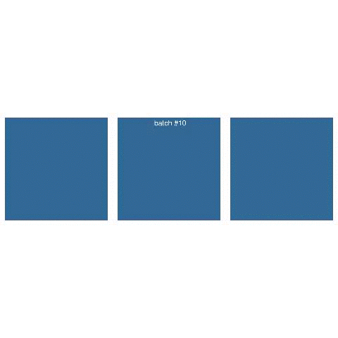
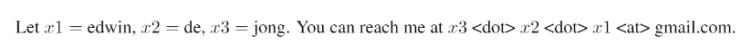

Incremental Sequence Learning
This work is based on the notion that you need to remember the past to predict the future, as noted in this excellent presentation on generative RNNs by Alex Graves: to predict the future steps in a sequence, the earlier part of the sequence must have been learned first.
Regular Feed-Forward Neural Networds (FFNNs)
A regular feed-forward neural network is limited in that it can only:
-
Receive input in a fixed format, determined by the number of input units
-
Learn a mapping from inputs to outputs
While neural networks can learn complex and highly nonlinear mappings, the behavior of a feedforward neural network can be reproduced by a giant lookup table that lists the output for each input.
Sequence learning
Recurrent neural networks (RNNs) are computationally more interesting; they can produce output of variable length, and moreover they can produce behavior that extends over time; in other words, they can perform computation. From an AI perspective, this makes RNNs an interesting class of models, since thinking is a process that extends over time; it involves following associations, and cannot be adequately represented by a direct input-output mapping. For a classic reference see e.g. Elman’s article Finding Structure in Time.
During sequence learning, the network receives one step of the sequence at a time, and is asked to predict the next step:
Sequence learning with a recurrent neural network: A sequence, here consisting of (x,y) pairs, is fed one point at time. After receiving each point, the network outputs its prediction for the next point, where the true next point forms the target.
Sequence generation
Once the network has been trained, we can use it to generate sequences independently (notice the inverted direction of the arrows):
Sequence generation with a recurrent neural network, also known as neural network hallucination: Given an initial input (which can be random), the network produces an output. This output forms the input for the next step, and the network in this way is able to generate a complete sequence.
Mixture Distribution Networks
The task that we will be looking into here is predicting MNIST stroke sequences, where each point of the sequence represents the pen offset from the previous point. A neural network produces continuous outputs, and we could in principle directly view the output as the prediction of the next point. A more powerful approach however is to use Mixture Distribution Networks. These add two features:
- Rather than always giving the same output, the output is a mixture of several components which represent different options for the output, each having a corresponding weight or probability of being used as the output
- The output values do not directly represent the sequence values. Instead, they specify a probability distribution. Together, this means that the output of the network is a mixture distribution.
Network architecture
The architecture of the network is as follows. The input layer consists of four units, receiving the pen offsets (dx, dy) and the end-of-stroke (eos) and end-of-digit (eod) signals. Two hidden LSTM layers of 200 units each are used. The output later contains the following output units for each of 17 mixture components: the weight of the component π, the mean (μ1, μ2) and standard deviation (σ1, σ2) of the offset, and the correlation ρ. Next, there are output units for eos and eod. Finally, 10 binary class variable outputs are present; the outputs of these are used in classification experiments only, and ignored in sequence learning experiments.
Incremental Sequence Learning
While the above diagram may suggest that sequence learning is, like regular feed-forward learning, just a matter of learning the mapping from one step of a sequence to the next, there is a crucial twist: the next step does not only depend on the previous step, but may depend on all previous steps of the sequence seen so far. As steps are being received, the network can build up an internal representation of the sequence that summarizes what has been received so far.
The idea we will be exploring here is that predicting later points in the sequence is potentially more difficult than predicting earlier points; in order to predict a point, the network must first have developed the ability to ‘summarize’ the preceding part of the sequence, i.e. to extract any information from it that is relevant for predicting future steps. Learning to summarize a short sequence is easier than learning to summarize long partial sequences, as the number of possible partial sequences grows exponentially with the length of the preceding sequence. It seems straightforward therefore to first train the network on the first few step of each sequence in the training set, and only once a reasonable level of performance has been achieved, move on to training on longer partial sequences. In this manner, the length of the parts of the sequences used for training is gradually increased, until finally the network is trained on the complete sequences. We name this approach Incremental Sequence Learning.
The specific scheme used here is as follows: at the outset, only the first two steps of each sequence are used as input for training. This means that the network receives step 1 of the sequence, predicts step two, and then receives step two and predicts step 3. The training RMSE of the predictions is monitored. Once the RMSE drops below a pre-configured threshold of 4, the length of the sequences is doubled, so that the first four points are used as input. This process continues until the network is being trained on the complete sequences. The idea behind this approach is that it is a lot easier for the network to learn the mappings between the first few points of the sequences as the context (the preceding part of the sequence) is shorter and therefore displays a much reduced number of combinations. For example, assuming 2 binary variables as input, a preceding sequence of length 2 can have up to 24=16 combinations, while a preceding sequence of length 40 (as occurs from the start in regular sequence learning) can have up to 280 = 1024 combinations. Surely it must be easier to learn the mapping from a small space of possible preceding sequence to the next step than to do so for an astronomically larger space. Once the network has learned to build up appropriate context information for shorter sequences, the thought is that it will be easier to generalize this ability to longer sequences.
Incremental Sequence Learning can be seen as a form of Curriculum Learning. To analyze the effect of Incremental Sequence Learning, we compare two control methods:
- Incremental number of classes: initially only sequences representing one of the digit classes are used. Incrementally, the set of classes used is expanded
- Incremental number of sequences: the number of sequences used in training is gradually increased
Since the number of sequence point processed in Incremental Sequence Learning varies over time, the number of sequences processed during training is no longer informative, and we measure performance as a function of the number of sequence points processed. To complete a sufficient number of runs for each of the experiments within a reasonable amount of time, we limit the training set to the first 10000 sequences and the test set to the first 5000 sequences of the MNIST stroke sequence data set.
The results for the Incremental Sequence Learning method are qualitatively different; the test error drops far quicker, and reaches a lower final level. One effect of using a varying sequence length is that the batches (defined in terms of number of sequences, as usual) are of varying size. To control for this difference, we perform a variant of the same experiment where the batch size is also defined in terms of the number of sequence points.
The results show that while the speedup seen with Incremental Sequence Learning is reduced, the test error continues to improve after 4 * 106 processed sequence steps, whereas all remaining methods stop improving at that point and in fact start to deteriorate. This suggests that the benefits observed with Incremental Sequence Learning are not solely due to the smaller or variable effective batch size; there must be another factor that explains the improvement.
The hypothesis that gave rise to these experiments was that recurrent neural networks may benefit from learning shorter sequences first as this may enhance the ability to learn to build up relevant context information. If this is the cause of the advantage, then a feedforward network should not display such a difference between the methods. To test this, we take exactly the same setup, but use feedforward units instead of LSTM units. The following figure shows the results:
Clearly, replacing the RNN with a FFNN takes away the entire remaining improvement; no appreciable difference between the methods is left. This implies that the benefit observed with Incremental Sequence Learning must be due to the difference between FFNNs and RNNs, which exactly corresponds to the ability of RNNs to build up relevant internal representations.
Given the positive results obtained with Incremental Sequence Learning, we apply this method to the full MNIST stroke sequence data set.
The right figure shows the full run; the left figure is zoomed in and shows the beginning of the same run. The increased amount of training data and training time compared to the earlier experiments yield a substantial further improvement of the test performance.
The test error at the end of the experiments (around 1) corresponds to an error of around 1 pixel distance. One might wonder whether the network is simply predicting that the next point will be at the same location as the current point, i.e. predicting an offset of zero, without learning the actual shapes of the digits; the generation results following below prove that this is not the case.
Transfer learning
So far, we have looked at sequence prediction, where the network predict each next step given the current step and the steps it has seen before, as summarized by its own internal state. It seems likely that if a network is able to accurately predict the next step of a sequence, it must have a notion of what digit class the sequence it is receiving represents. If that is the case, then it should be possible for the network to transform to the task of sequence classification. To test this, we start with the trained sequence prediction model described above, and then switch the task to sequence classification by changing to a loss function that measures the cross-entropy classification loss. The following chart shows the results, including several comparison methods:


While all methods are able to learn to classify the digit sequences, the methods that have been trained on the sequence prediction task first achieve better final performance.
Generative Results
To see what the network has learned during different stages of training, we visualize the mixture distributions predicted by the network for the points of the same three test sequences at regular intervals (every 10 batches). The following video shows the results:
 Video showing what a generative recurrent neural network has learned over the course of training
The video offers a look into what the network has learned. At the start, e.g. around batch 40, we see wide distributions, and we see only a few points, meaning that the remaining predictions fall outside the window. Around batch 90, the distributions are somewhat narrower, and most of the digit falls within the window. There are still large changes in the position of the digit, meaning the offsets vary wildly. From batch 510 onwards, the entire digit remains within the confines of the window. The figure looks blurry, corresponding to a high estimated variance, which is an easy way for the network to ensure that the predicted point is at least within the range of its predicted distribution. Around batch 550, the variance quickly decreases, and the images begin to represent clear depictions of the digits.
Unguided generation a.k.a. Neural Network Hallucination
As noted in the beginning, an interesting aspect of RNNs is that they can produce output independently, based on what has been learned during training. We provide the network with a single initial input step, and use the output at each step as the input for the next step. The figures below show the results:
The images clearly resemble digit shapes; this implies that the network is able to predict long sequences (the average digit sequence consists of 40 steps), purely by predicting each next step based on its own prediction of the previous step. This suggests a degree of robustness in the predictions; a relatively minor deviation in the predictions could easily build up and lead to large deviations. While the network has not been trained on its own output (a technique that is sometimes used), its output is apparently sufficiently stable to enable the generation of long output sequences.
Class prediction
Finally, we look into what happens during sequence classification. At each step of the sequence, the ten class outputs of the network are monitored, and their output is visualized. As more steps of the sequence are being received, the network receives more information, and adjusts its expectation of what digit class the sequence represents. The figure below shows how the network’s belief about the current digit changes over the course of receiving the sequence that represents the digit.
Classification output for a sequence representing a 0. Initially, as the downward part of the curved stroke is being received, the network believes the sequences represents a 4. After passing the lowest point of the figure, it assigns higher likelihood to a 6. Only at the very end, just in time before the sequence ends, the prediction of the network switches for the last time, and a high probability is assigned to the correct class.
Classification output for a sequence representing a 3. Initially, the networks estimates the sequence to represent a 7. Next, it expects a 2 is more likely. After 20 points have been received, it concludes correctly that the sequences represents a 3.
Classification output for a sequence representing a 9. While receiving the sequence, the dominant prediction of the network is that the sequence represents a five; the open loop of the 9 and the straight top line may contribute to this. When the last points are received, the network considers a 9 to be more likely, but some ambiguity remains.
Article
The results shown here are described in this article: https://arxiv.org/abs/1611.03068
Code
A Tensorflow implementation of the algorithms used in this research is available here.
Contact
In case you have thoughts, comments, suggestions, or questions about this work, feel free to contact me (this does not hold for spambots though): 